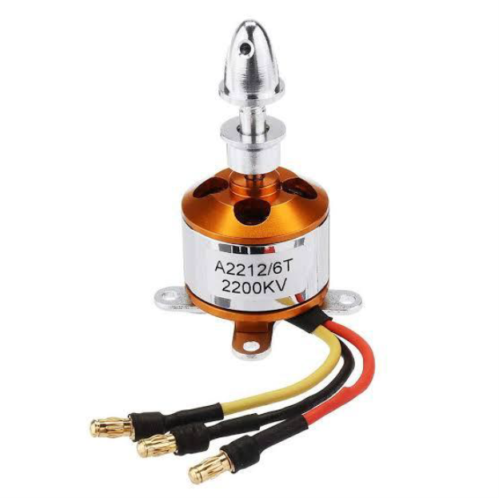
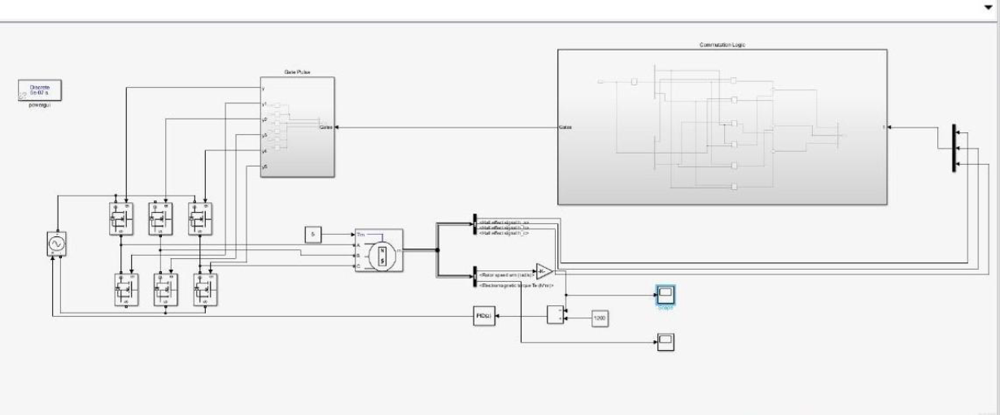
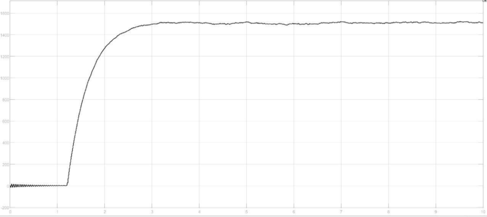

Speed Control of BLDC Motor Using Arduino and PWM Technique
Hardware Design, Control Strategy, and Simulation
Introduction
Brushless DC (BLDC) motors have gained prominence due to their efficiency, low maintenance, and
ability to deliver high torque and speed without the drawbacks of mechanical commutators. This
project focuses on controlling the speed of a BLDC motor using Arduino Uno and PWM (Pulse
Width
Modulation) techniques, combined with simulation in MATLAB/Simulink for analysis of
motor
performance and dynamic behavior.
The project involves the implementation of both hardware and simulation models,
highlighting how
PWM signals from an Arduino can effectively drive an Electronic Speed Controller (ESC) to
regulate motor speed. A Proportional-Integral (PI) controller is used in the simulation
environment to improve response and stability.
Figure 1 - BLDC Motor Cross Section with Hall Sensors
Objective
To develop a cost-effective and efficient speed control solution for a BLDC motor using:
- Arduino Uno as the controller
- PWM-based speed variation
- ESC for electronic commutation
- Simulink models for testing motor behavior under varying loads and speeds
System Overview and Design
BLDC Motor and Its Construction
A BLDC motor consists of a stationary stator with armature windings and a rotating permanent
magnet rotor. Hall sensors are integrated to determine the rotor's position, which is essential
for electronic commutation. The elimination of brushes enhances motor reliability, reduces
noise, and increases lifespan.
Figure 2 - Stator and Rotor Construction
Key Features of BLDC Motors:
- High efficiency and reliability.
- Better torque-to-weight ratio and dynamic response.
- No mechanical commutation or brush wear.
Hardware Components
The hardware setup includes:
-
Arduino Uno :Generates PWM signals to control the ESC.
-
Electronic Speed Controller (ESC) :GridInterfaces with the motor and performs electronic commutation
-
Potentiometer :Adjusts the PWM duty cycle for speed control.
-
A2212/6T 2200KV BLDC Motor :Commonly used for drones and robotics.
-
3S Li-Po Battery :Provides the required DC supply.

Figure 3 - Hardware Components Overview
Control Strategy and Methodology
PWM-Based Speed Control
PWM signals with adjustable duty cycles control the average voltage supplied to the ESC, which
in turn dictates motor speed. By varying the duty cycle (0% to 100%), precise speed control is
achieved.

Figure 2 - Stator and Rotor Construction
Arduino Implementation
The Arduino program generates 50 Hz PWM signals, similar to controlling servo motors, with the
potentiometer input mapped to PWM duty cycles. ESC calibration ensures proper response across
the entire range.
Simulation and PI Control
A mathematical model of the BLDC motor was created in MATLAB/Simulink to analyze electrical and
mechanical dynamics.
- The PI controller minimizes steady-state error and ensures smooth speed response
- Back EMF and phase currents are analyzed to validate commutation and torque generation.

Figure 5 - Simulink Model of BLDC Motor
Figure 6 - PI Controller Block
Simulation and Results
The simulation results confirm that the system achieves the desired reference speed (e.g., 1500 RPM) quickly and stabilizes within 3 seconds, even with load torque applied. Current waveforms and electromagnetic torque were also observed to remain within safe operational limits.

Figure 7 - Speed vs. Time Graph
Figure 8 - Electromagnetic Torque Graph
Conclusion
This project successfully demonstrates the speed control of a BLDC motor using a low-cost Arduino-based platform combined with PWM signals and an ESC. The Simulink model validates theoretical predictions and highlights the advantages of using PI control for smooth and efficient motor performance. The system is well-suited for applications in robotics, small-scale automation, and electric vehicle subsystems.